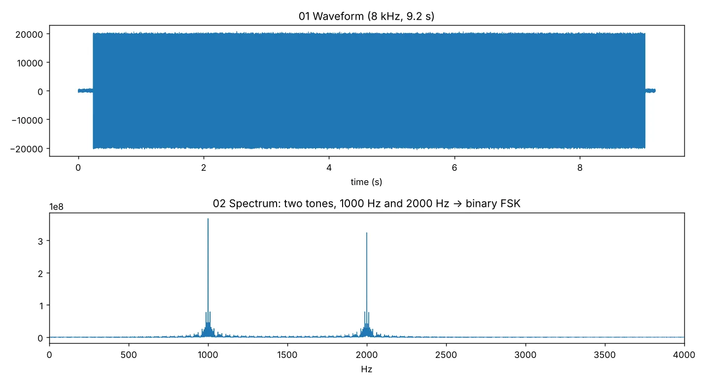
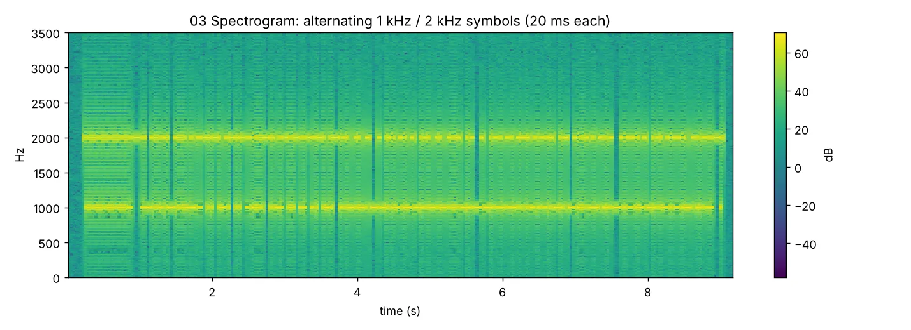
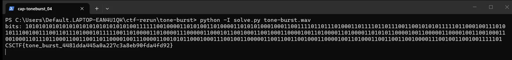

01Start point: the handout, tone-burst.wav
- What I did: plotted the waveform and took an FFT of the whole 9.2 s file.
- What I found: the spectrum has exactly two strong tones, 1000 Hz and 2000 Hz, and the waveform is one long burst of signal.
- Thinking: two tones and nothing else, switching over time, means binary FSK, so the next move is to find the symbol timing.

02Pivot: the framing is 50 baud
- What I found: the signal starts at sample 1921 (about 0.24 s), and the tone alternates every 20 ms (160 samples), which is 50 baud.
- Thinking: a fixed 160-sample symbol means I can cut the burst into windows and decide each one on its own.

03Pivot: demodulate the tones
- What I did: for each 160-sample window, compared the energy at 2000 Hz against 1000 Hz with a single-bin DFT per tone, reading 2 kHz as 1 and 1 kHz as 0.
- What I found: the bit stream starts with 32 bits of alternating 1010 (a clock-sync preamble), then 01111110 (0x7E), then the payload.
- Thinking: 0x7E after a sync preamble is an HDLC-style frame flag, so the payload's byte boundary starts right after it and I don't have to guess the alignment.
04Flag: decode the payload
- What I did: read the bits after 0x7E as 8-bit ASCII, MSB first.
- Thinking: the first bytes came out as CSCTF{, which confirms both the bit mapping and the byte alignment.
- Result: CSCTF{tone_burst_4481dda445a0a227c3a8eb90fda4fd92}
